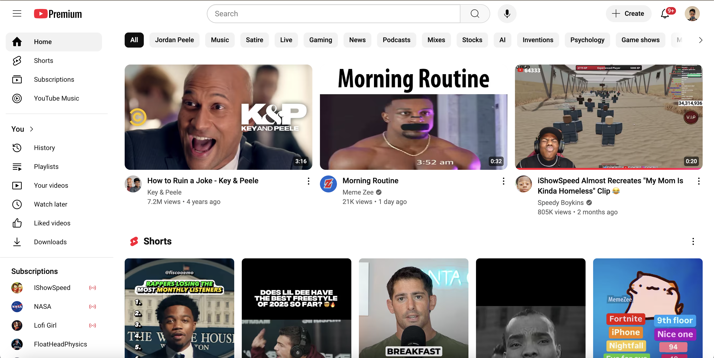
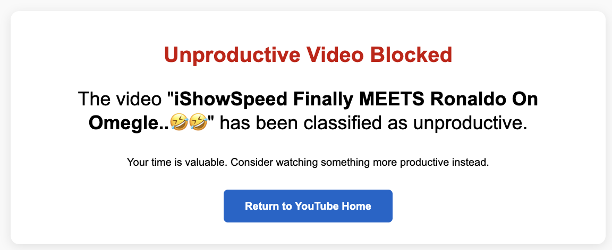

- Automatic detection of unproductive videos
- Quick Blocking
- Time-saving statistics
- Easy installation
1
Install the Extension
Add TubeTamer to your Chrome browser with just one click.
Screenshot 1
2
Click on a Video
Click on any video you want to watch.

3
Stay Focused
TubeTamer will automatically block unproductive videos.
